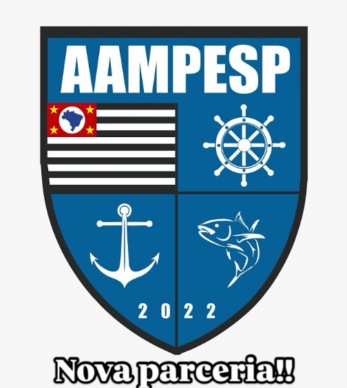

Fisioterapia
Prevenção, tratamento e recuperação de movimentos.
Guarujá · Baixada Santista
Fisioterapia, Pilates e Estética Avançada em uma experiência próxima, segura e individualizada.
Especialidades
Prevenção, tratamento e recuperação de movimentos.
Força, mobilidade, equilíbrio e consciência corporal.
Protocolos faciais e corporais individualizados.
Tecnologia e acompanhamento profissional.
Parcerias e facilidades
A Health atende por meio de parcerias e benefícios. Consulte com a equipe os planos, serviços elegíveis e a disponibilidade.

Conheça a clínica
Veja mais registros dos atendimentos e do espaço da Health.
Abrir galeria de fotos →Seu próximo passo